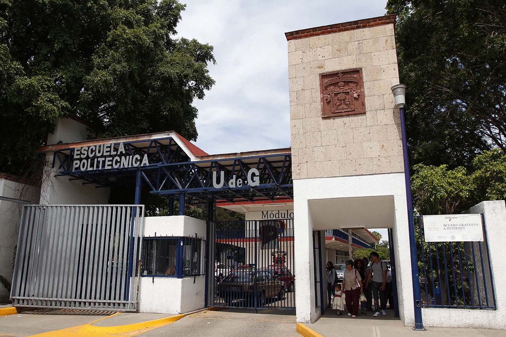
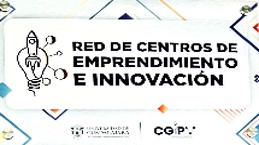

Inicio
La Escuela Politécnica de Guadalajara cuenta con un programa de emprendimiento que busca fomentar la cultura emprendedora entre sus estudiantes y egresados.
La Escuela Politécnica de Guadalajara, es una dependencia de nivel medio superior de la Universidad de Guadalajara que oferta planes de Tecnólogos Profesionales y Bachillerato Tecnológico, mismo que tienen una duración de cuatro y tres años respectivamente.
La Escuela Politécnica Guadalajara fue creada el 3 de julio de 1915, con la finalidad de formar técnicos que sean dice el decreto; “algo más que un obrero y menos que un ingeniero”, ofreció carreras de dos años y se orientaba a los oficios urbanos, mecánico, electricista, dibujante, fundidor, yesero, entre otros. En 1925 se incorpora como parte de la Universidad de Guadalajara, y se formaliza el nombre que actualmente ostenta.
El plantel cuenta con seis edificios de aulas y laboratorios y cuatro naves para talleres. 72 aulas son destinadas a la docencia, 26 laboratorios, 17 talleres, una cancha de básquet bol, 14 espacios de sanitarios, (siete para hombres y siete para mujeres), dos patios, 8 áreas verdes, dos estacionamientos, 5 áreas de seguridad, 5 espacios para uso académico.

COORDINACION GENERAL DE INVESTIGACIÓN, POSGRADO Y VINCULACIÓN
Av. Juárez No.976, Colonia Centro, C.P. 44100,
Guadalajara, Jalisco, México
Teléfonos: +52 (33) 3134 2222 EXT. 12297
Coordinación de Posgrado: +52 (33) 35403007
Coordinación de Investigación +52 (33) 35403008
Derechos reservados ©1997 - 2023. Universidad de Guadalajara. Sitio desarrollado por Bomba Squad


